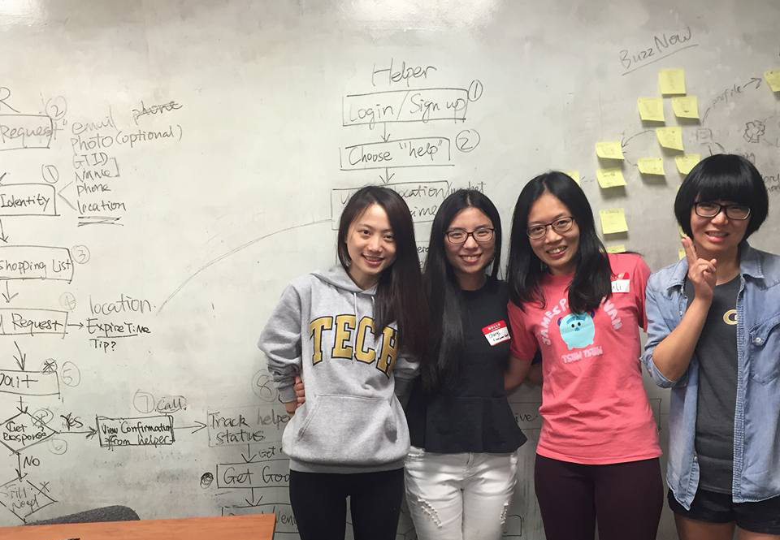

BuzzNow
UX design
This is a grocery shopping app we, a team of four hackers, designed and developed at the AT&T hackathon in 36 sleepless hours. The app arises from the problem shared by all of us that we don't have enough time for grocery shopping. Therefore, we attempt to build a platform where users can request and offer shopping help to their neighbors. Besides grocery shopping, another goal of the platform is to provide users a chance to meet their neighbors and build connections within the community.
Target users
The target users are Georgia Tech students who have busy schedules. They do not have enough time to do grocery shopping as frequently as they wish to get fresh vegetables and fruits. And they live on low budget so they prefer cooking at home rather than dining out. Most of them are new to Atlanta, and they are eager to make new friends. In addition, the app can be extremely beneficial to students with mobility impairment (Most of the descriptions are based on ourselves).
User scenarios
There are two major groups of users — buyers, who request shopping help, and shoppers, who offer shopping help.
Task analysis
Prototype demo (Version 1.0)
Problems and solutions
1. There might not be enough shoppers to satisfy the requests from buyers. The primary incentive of using BuzzNow is to have groceries delivered, but users might not be willing to help others do grocery shopping.
We incorporated an incentive system into the app based on the number of "honey sticks.” If buyer A and buyer B send shopping request for the same supermarket at the same time, but A has more honey sticks than B, then buyer A's request will be more likely to be shown to the shopper as the best match or at the top of list, and thereby it is more easily to be picked up. This incentive system corresponds with our motive of building a well-connected community based on mutual help. In addition, the app will remind buyers if their shopping lists are too long to be picked up by any shopper.
2. Should shoppers or buyers pay first for the goods? Will they trust each other?
They system requires logins with real Georgia Tech student IDs and all users are identifiable. In our app, shoppers pay for the goods first and can request payment from buyers after they check out. The app would also remind shoppers of keeping the receipts in case buyers need to look at the prices or return goods.
3. Should buyers create a shopping list first or select a supermarket first? Which sequence best suits users’ shopping habit?
After discussion, we decided that creating a shopping list should be preceded by selecting the specific supermarket. On the screen of selecting a supermarket, the buyer can see the number of available shoppers for each supermarket, which is updated in real time. To increase the likelihood of their requests being picked up, buyers will choose the supermarket with most potential shoppers. And then buyers can create shopping list based on the available goods in the supermarket. In addition, there is a “no preferred supermarket” option if buyers are only interested in common goods that should be available in any supermarket.
Personal gains
This is my first hackathon and my first app. I absolutely enjoyed the experience. My teammates are all very talented, from whom I learn a lot. We applied what we learned from the HCI class to the design process. We designed with users’ perspectives in mind and followed the iOS design guidelines. Time limiting, we could not conduct user research thoroughly and go through each step in design process. However, we brainstormed users’ concerns and pain points and tried to solve them. It surprised me how much we could achieve in such short time. We are currently working in a team improving the design and trying to develop the app with Swift.
Here's a photo of our team after we won the Best App from All Women Team at AT&T Hackathon.